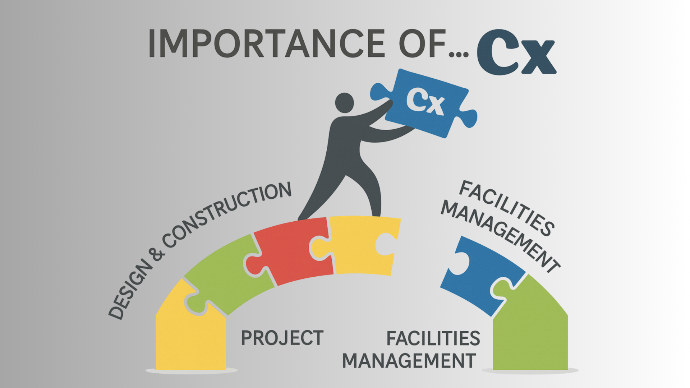

Tài liệu đào tạo chuyên sâu về Testing & Commissioning hệ thống MEP, HVAC và BMS. Nền tảng đảm bảo vận hành an toàn và tối ưu năng lượng cho Data Center & Tòa nhà thông minh.
Trong hệ thống Cơ điện (MEP) và Tự động hóa tòa nhà (BMS), quy trình T&C cho dự án (Testing and Commissioning) không đơn thuần là việc cấp nguồn và bật công tắc cho thiết bị chạy. Đây là một quy trình kiểm soát kỹ thuật nghiêm ngặt, trải dài từ giai đoạn thiết kế trên bản vẽ cho đến khi bàn giao thực tế.
Nhiệm vụ cốt lõi của T&C là xác minh, chứng minh và ghi chép lại toàn bộ hiệu suất của hệ thống, đảm bảo chúng tương tác liên động với nhau chính xác theo Kịch bản vận hành (SOO) và đáp ứng tuyệt đối yêu cầu khắt khe của Chủ đầu tư.

Vì sao quy trình này quyết định 90% tuổi thọ của hệ thống cơ điện?
Khoảng 30% lỗi tiềm ẩn của hệ thống (như đứt cáp ngầm, sai logic BMS, hụt áp lực ống) chỉ xuất hiện trong giai đoạn chạy thử liên động. T&C phát hiện và triệt tiêu các rủi ro này trước khi tòa nhà đi vào vận hành, đặc biệt sống còn với các hạ tầng như Data Center.
Quy trình T&C chuẩn giúp hiệu chuẩn (calib) cảm biến và vòng lặp PID chính xác nhất. Khi thiết bị chạy đúng điểm hiệu suất (Sweet spot), chủ đầu tư sẽ tiết kiệm được hàng tỷ đồng chi phí điện năng (O&M) và đạt chỉ số PUE tối ưu mỗi năm.
Cung cấp "bản đồ sức khỏe" của dự án thông qua hồ sơ O&M hoàn chỉnh. Đào tạo BMS bài bản giúp đội ngũ vận hành làm chủ công nghệ, hạn chế hỏng hóc do thao tác sai, qua đó bảo vệ uy tín thương hiệu của nhà thầu Cơ điện trong mắt CĐT.
Hiểu đúng bản chất để tránh nhầm lẫn trong quá trình triển khai dự án
Tập trung vào THIẾT BỊ đơn lẻ. Là quá trình đo đạc, kiểm tra tĩnh và động để xác nhận từng thiết bị hoạt động đúng thông số kỹ thuật của nhà sản xuất.
Tập trung vào HỆ THỐNG tổng thể. Là quá trình đảm bảo các thiết bị phối hợp nhịp nhàng theo kịch bản thiết kế (SOO) để đáp ứng yêu cầu của chủ đầu tư.
Quy trình cốt lõi quyết định 90% tuổi thọ và độ ổn định của hệ thống cơ điện
Khởi tạo & Thẩm định thiết kế: Xây dựng "Commissioning Plan" ngay từ khi dự án còn trên giấy.
Kiểm soát chất lượng tại nguồn: Đánh giá thiết bị cốt lõi trực tiếp tại nhà máy của hãng trước khi xuất xưởng.
Kiểm tra tĩnh tại hiện trường: Giai đoạn hệ thống đã lắp đặt xong nhưng chưa cấp nguồn điện.
Khởi động thiết bị đơn lẻ: Chính thức "Power-on". Cấp điện và chạy độc lập từng thiết bị.
Kiểm tra logic vận hành (FPT): Chạy thử tự động (Auto). Lúc này BMS đóng vai trò nhạc trưởng.
Kiểm tra liên động toàn diện (IST): Thử thách khắt khe nhất, mô phỏng sự cố cực đoan nhất.
Ví dụ chuỗi 6 cấp độ T&C cho Hệ thống Chiller Trung tâm tại Data Center
Kỹ sư CxA rà soát bản vẽ đường ống, yêu cầu lắp thêm các van Bypass và cảm biến chênh áp (DP) ở vị trí xa nhất để BMS có thể lấy tín hiệu điều khiển biến tần bơm sau này.
Đoàn kỹ sư sang nhà máy của hãng tại nước ngoài, chứng kiến Chiller 1000 Tấn lạnh chạy ép tải ở 100%, 75%, 50%. Hiệu suất giải nhiệt COP đạt chuẩn mới cho đóng thùng chở về Việt Nam.
Đường ống thép hàn xong được bơm nước ép áp lực 15 bar ngâm trong 24h không tụt áp. Kỹ sư BMS tiến hành "thông mạch", đo cáp từ cảm biến nhiệt độ dưới hầm lên tới tủ DDC không bị đứt ngầm.
Cấp điện lưới. Nhấn nút chạy từng bơm nước sinh hàn. Thợ cơ khí đo độ rung của cánh quạt tháp giải nhiệt. Màn hình Chiller sáng đèn, đọc đúng nhiệt độ nước đang là 28°C.
Kỹ sư giả lập nhiệt độ nước cấp (CHWS) tăng lên 10°C. BMS lập tức phát lệnh gọi chạy thêm Chiller số 2 và tăng tua biến tần của bơm nước. Logic vận hành mượt mà, đúng thiết kế.
Kéo cầu dao tổng. Điện tắt đen. UPS giữ điện cho tủ điều khiển. 15 giây sau máy phát nổ, ATS chuyển nguồn. Hệ thống Chiller tự động "Restart" lại theo thứ tự: Bơm -> Tháp -> Chiller để Data Center không bị quá nhiệt.
Giai đoạn cuối cùng là đóng gói tài liệu O&M. Đối với hệ thống Chiller trên, chúng tôi tiến hành đào tạo BMS chuyên sâu, hướng dẫn vận hành viên cách đọc biểu đồ Trendlog để duy trì chỉ số PUE tối ưu nhất cho Data Center.